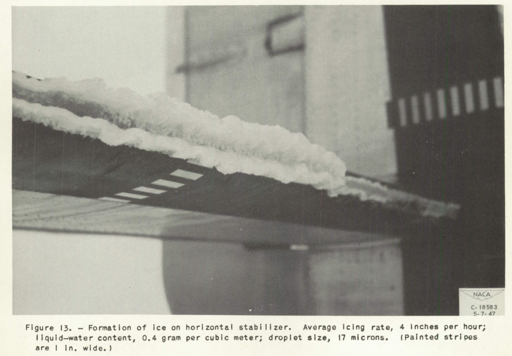

"Icing is as close to pure witchcraft engineering as you can get."
Thomas S. on LinkedIn.
 Figure 13 of NACA-TN-1598. Formation of ice from flight on horizontal stabilizer. Average icing rate, 4 inches per hour; liquid-water content, 0.4 grams per cubic meter; drop size, 17 microns. (Painted stripes are 1 inch wide, indicating an ice thickness of about 2 inches.)
Summary
This website was written with people in mind (engineers, aerodynamicists) who already know something about aircraft and aircraft icing.
To make it a little more understandable to others, I summarize here the assumed common knowledge, with a few of the key technical terms.
Discussion
Airplanes require lift from the wings in order to fly. This lift is produced due to details of the air flowing over the well-shaped wing.
Ice may form on airplanes in flight in certain weather conditions. The ice changes the shape of the wing, and can reduce lift and produce more drag on the airplane. Measurements of lift are often expressed as the coefficient of lift (Cl) and drag as the coefficient of drag (Cd).
To limit the effects of ice in flight, some aircraft (and nearly every commercial airliner) has ice protection on parts of the wing and other aircraft surfaces. This protection is often heating, but other protections systems are also used, such as flexible boots that deflect to remove ice.
The weather conditions that can produce icing in flight are clouds with a temperature of less than 0C (32F). In some of these clouds (but not all), the water drops in the cloud can still be liquid below the usual freezing temperature (termed supercooled liquid water). These drops can adhere and freeze on the wing in flight.
Technical terms that describe an icing condition are the liquid water content (frequently abbreviated as LWC), which in the mass of all of the water drops in a cubic meter of air (units are typically grams/cubic meter or g/m^3). Water drop size is measured by the drop diameter, usually in micrometers (one millionth of a meter).
The water drops are typically are small, typically around 20 micrometers (a human hair is roughly 100 micrometers in diameter). Water drops in a cloud are not all the same size, so a term MVD (median volumetric diameter) is used to describe an "average" drop size. Temperature is also important.
It took many years of research to characterize icing weather conditions, requiring the invention and improvement of many specialized instruments. It also took much research to quantify the effects of ice, and to design practical ice protection systems.
This research from the NACA-era (National Advisory Committee for Aeronautics, 1915 to 1958) is detailed in this site, with a few diversions into the post NACA-era.